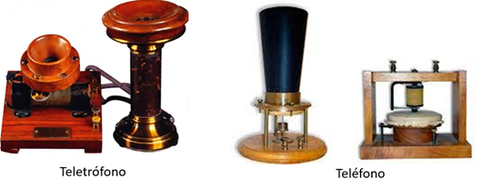
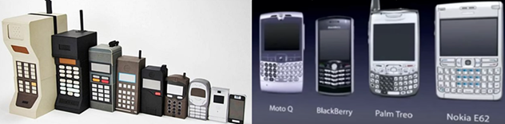
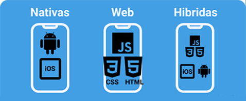
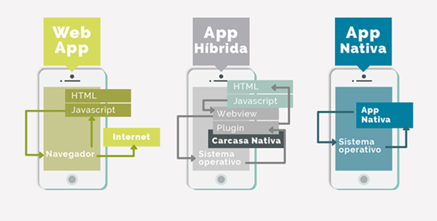

Dispositivos móviles
Los orígenes de la comunicación a distancia
El camino hacia los dispositivos móviles comienza con los primeros intentos de transmitir la voz a distancia. El telégrafo abrió la puerta a una nueva era de comunicación rápida, pero fue el teléfono de Graham Bell, patentado en 1876, el que marcó el inicio de las telecomunicaciones modernas.
Este invento permitió que dos personas se comunicaran en tiempo real a través de largas distancias, estableciendo las bases para todo lo que vendría después.
Alexander Graham Bell
Alexander Graham Bell (1847–1922) fue un científico e inventor escocés-estadounidense.
Es mundialmente conocido por la invención del teléfono, patente que registró en 1876.
Además de sus aportes en telecomunicaciones, trabajó en proyectos relacionados con la enseñanza a personas sordas, la aeronaútica y la óptica.
Su legado está marcado por la creación de la Bell Telephone Company, que se convertiría en una de las compañías más influyentes del sector.
Antonio Meucci
Antonio Meucci (1808–1889) fue un inventor italiano que desarrolló un dispositivo precursor del teléfono al que llamó teletrófono en 1854.
Por dificultades económicas, no pudo pagar la patente definitiva de su invento y solo registró una advertencia de patente (caveat) en 1871 en Estados Unidos.
Durante años, su papel en la invención del teléfono fue ignorado, pero en 2002 el Congreso de los Estados Unidos reconoció oficialmente la contribución de Meucci a la telefonía.
El teletrófono y las primeras ideas móviles
Antes de que existieran los teléfonos inalámbricos modernos, hubo experimentos como el teletrófono, un dispositivo rudimentario que proponía llevar la comunicación más allá del cable fijo. Aunque sus limitaciones técnicas no lo hicieron práctico, es un ejemplo de cómo la idea de movilidad ya estaba presente en el siglo XIX.

Martin Cooper y el primer teléfono móvil
En 1973, Martin Cooper, ingeniero de Motorola, realizó la primera llamada desde un teléfono móvil portátil. El dispositivo era grande y pesado (más de un kilo), pero sentó las bases para lo que hoy conocemos como telefonía móvil. Este hito marcó el inicio de una nueva etapa: la comunicación sin cables.
Martin Cooper (1928–) es un ingeniero e ejecutivo estadounidense conocido como el padre del teléfono móvil.
En 1973, mientras trabajaba en Motorola, realizó la primera llamada desde un teléfono móvil portátil, usando un dispositivo que pesaba más de un kilo y medía más de 25 centímetros.
Su innovación marcó el inicio de la era de la telefonía celular y transformó para siempre la forma en que nos comunicamos.
Cooper continuó su carrera en el campo de las telecomunicaciones y es considerado una de las figuras clave en el desarrollo de las comunicaciones inalámbricas modernas.
La llegada de las aplicaciones
Con el avance de la tecnología, los móviles dejaron de ser simples herramientas de voz. Surgieron las aplicaciones, que ampliaron sus funciones hacia el entretenimiento, la productividad y la conectividad.
Primero aparecieron las aplicaciones más básicas: calculadoras, calendarios, juegos simples. Luego, con la expansión de internet, se incorporaron aplicaciones más complejas y conectadas.

Aplicaciones web
Las primeras aplicaciones que funcionaban sobre móviles conectados a internet fueron las aplicaciones web. Estas no se instalaban en el dispositivo, sino que se ejecutaban en el navegador.
Ofrecían acceso universal y facilidad de uso, pero estaban limitadas por la conectividad y por la capacidad del navegador.
Aplicaciones híbridas
Después surgieron las aplicaciones híbridas, que combinaban la flexibilidad del desarrollo web con el acceso a funciones del dispositivo.
Se construían con tecnologías web (HTML, CSS, JavaScript) y se empaquetaban en un contenedor nativo, lo que les permitía instalarse y funcionar incluso sin conexión.
Aplicaciones web progresivas (PWA)
Las PWA representaron un paso intermedio entre lo web y lo nativo.
Son aplicaciones web que se comportan como aplicaciones instaladas: permiten notificaciones push, funcionan offline y ofrecen una experiencia de usuario muy cercana a la de una app tradicional.
Aplicaciones nativas
Finalmente, las aplicaciones nativas marcaron un antes y un después.
Estas aplicaciones están diseñadas específicamente para cada sistema operativo (iOS, Android), lo que permite aprovechar al máximo el hardware y las capacidades del dispositivo.
Ofrecen mejor rendimiento, seguridad y experiencia de usuario, convirtiéndose en el estándar de facto de la telefonía moderna.

Características WebApps, Apps híbridas, Apps nativas
